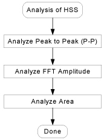
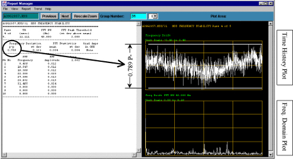
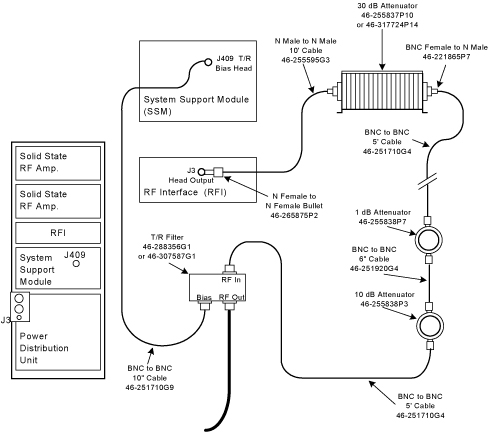
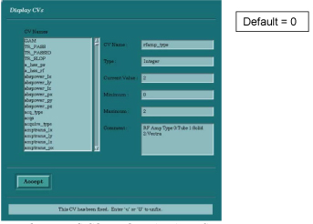
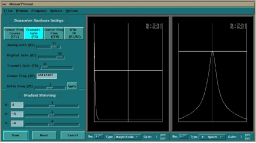

- 00000018WIA30DE3F20GYZ
- id_131068781.2
- Jul 6, 2019 12:17:31 AM
Analyzing HSS Results
Effectivity:
Parts of this Service Note are related to the newer systems that have UCERD and the 1.5T RF/PDU. However, most of methodology explained within can be applied to any Lx System.
Problem:
HSS Area has been failing specification since the introduction of 2 new hardware components approximately December 1999. The current specification for Area is < 1.2 counts.
The Universal Combined Exciter Receiver and Data Acquisition board (UCERD) was developed and phased into production so that a single Exciter/Receiver configuration could be used at different field strengths. However, this also introduced low level phase noise that is characterized as broadband noise and higher Area in HSS.
Approximately the same time, the 1.5T RF/PDU was also phased-in. The 1.5T RF/PDU Test port, which is used to supply RF energy to the HSS Coil, no longer utilized a blanking signal. The previous generation RF Cabinet used a blanking signal to force the output to a zero state between RF pulses. Without this blanking signal, any noise created by the RFI circuitry would show up as additional broadband noise. Again, this broadband noise would be identified as higher Area in HSS.
The HSS fault isolation process described in this Service Note is to help analyze HSS Frequency Stability Test results and provide the correct flow to troubleshooting and fault isolation. Do not arbitrarily diagnose failing FFT Area results as a function of the UCERD or the 1.5T RF/PDU.

Peak To Peak (P-P) Analysis
The time history plots display the real time frequency drift collected during the scan. Each scan is comprised of 5 passes, each pass is plotted on its own page along with its corresponding frequency domain plot (post FFT) below it.

Review the time history plots. Review each of the 5 individual passes for P-P Frequency Deviation. The maximum allowed frequency instability specification is 0.7 P-P within a 40cm Diameter Spherical Volume (DSV).
The Time History plots should show a signal with a frequency component that is fairly centered and horizontal on the graph. There should be no upward or downward slope. Abnormalies are displayed as transient bursts, frequency patterns, sloping curves, or low frequency curves (See Figure 2).
In Mobile environments, windy days can cause van movement which will affect frequency drift. An indication in the plot of van motion due to wind typically results in a very low frequency “wave” in the time history plot and a large slope decay from 0 to 1-2 Hz range in the FFT plot. If wind is suspect, rerun HSS after changing CV rhuser5 from 0 to 1. This selects a Hanning filter that removes very low frequencies. HSS would now produce twice as many plots (with and without the filter).
See Hanning Window Filter in this document. See examples of Van motion caused by wind in IFigure 10.
Also, movement of the van, such as a person walking can cause P-P failures as well as Area and FFT amplitude failures.
Movement in a van or movement around the magnet during HSS will typically cause failures and the test will need to be rerun!
Unstable magnet pressure will also cause Frequency drift. If the magnet was just refilled with Helium, the Chiller was off, or there is a significant Scan room temperature change, frequency drift can occur. Recheck Center Frequency during Manual Prescan. If it is changing, let the system stabilize or troubleshoot the center frequency drift problem.
The Magnet Monitor would also indicate changing Helium pressure.
FFT Amplitude
When analyzing HSS for high spikes in the FFT plots, view each of the Frequency Domain (FFT) plots to see if the spike is consistent across all 5 passes or is intermittent.

The FFT amplitude is an indication of the magnitude/strength of the vibration, or noise at a particular frequency.Figure 3 shows the plot of an HVAC fan that is slightly out of balance causing a spike on the FFT graph at a frequency of 18.984 Hz, and with an amplitude of .063 (e.g. Figure 3. A fan that is extremely out of balance could have the same frequency component of 18.984Hz, but the FFT amplitude (spike height) could be 0.1 counts or higher. The higher the spike or FFT amplitude, the greater the amount of area under the spike, causing higher Area, which also may fail spec. Fix the cause of the spike first, before attempting to fix high Area.
-
Perform an HSS scan and analysis in the normal mode. Record output file number. ________________
-
Using Report Manager, review the Time History plots, not the averaged plot. The example plot (Figure 4) indicates a high “spike” at 31.025Hz with a FFT amplitude of 0.059. Even though the amplitude is within spec (less than 0.1), it is still unusual. The question to be answered, is 31.025Hz the real frequency, or could this spike be caused from a frequency higher than 45Hz that has aliased back into the plot?
-
Verify the frequency of the “spike”. It is important to know the correct frequency which will help in troubleshooting (i.e. knowing the actual frequency to compare with accelerometer results, or by determining the RPMs to find corresponding rotational frequencies of fans, blowers, motors, etc.).
-
With the System still set-up from the previous HSS scan, change 2 CVs (hss_tr & rhuser0). This will expand the bandwidth of the HSS scan to 50Hz. (Continue using the standard 0.25M NiCl2 (green color) sample vial.)
From Research Operations:
-
Select Display CV's
-
For CV Name, type or select: hss_tr
-
Change the Current Value to: 10000Enter(Default is 11111)
-
Next CV, type or select: rhuser0
-
Change the Current Value to: 50Enter (Default is 45)
Note:Do NOT change the User CVs from the “Additional Parameters” screen on the Scan Desktop. Leave it at BW=0 (45Hz).
-
-
Perform a Download and then scan.
From Research Operations: Select Download.
-
Record HSS output file number. ______________
-
Display the Time History Plots using Report Manager. See Figure 5.
-
Determine if the spike moved.
-
If the spike appears to have moved slightly to the left, and is reporting a similar FFT Frequency, then the correct natural frequency value has been reported.
-
If the spike has moved to the right, and the reported frequency is higher, then the spike is caused by a higher frequency that has aliased back into the 45Hz bandwidth. To determine the actual higher frequency value:
-
Find the difference between the reported frequency of the 50Hz and the 45Hz bandwidth scans.
-
Add the difference with 45Hz. (See following example.)
Using the Example from Figure 4 :
-
Spike is at 31.025 Hz in the 45Hz BW scan.
-
Expanding the Bandwidth to 50Hz, the spike moves to the right and is now reported as 41.211Hz (see Figure 5). This indicates that the natural frequency is above the 45Hz window.
Find the Frequency:
-
45Hz -31Hz = 14Hz Difference between Reported Freq. and Bandwidth.
-
45Hz + 14Hz = 59Hz Actual Frequency of the disturbance.
It also works using the 50Hz Bandwidth plot:
-
50Hz -41Hz = 9Hz Difference between Reported Freq. and Bandwidth.
-
50Hz + 9Hz = 59Hz Actual Frequency of the disturbance.
-
-
-
Troubleshoot and find root cause of component that is vibrating at 59Hz.
Additional Troubleshooting Tips:
Spikes that are very narrow (e.g. 1 pixel in width) are usually caused by electrical sources. Mechanical vibrations typically cause spikes that have some bandwidth (like the previous examples) or spikes that vary in frequency, even slightly.
Check frequency with Table 1 to see if it is a known system or mobile component that may be suspect. (This table is a guideline and should NOT be used to identify a source as a definitive problem.)
Turn off a component and see if the peak at the offending frequency is removed or greatly reduced.
If YES, troubleshoot the component to find root cause.
If NO, continue turning off components one at a time and take an HSS scan to determine if frequency spike is gone.
Turn OFF components in the following order:
-
Heating, Ventilation, and Air Conditioning (HVAC) , including blowers in Mobile environments
-
Gradient Patient Blower
-
Heat Exchanger
-
Chiller
-
Other


Other Observations
Narrow Spikes
If the spike is very narrow (e.g.1 pixel in width) from the base to the top, and the frequency is consistent with every HSS scan, then the spike may be caused from a electrical source. For example, the 29.833Hz spike seen on systems with a UCERD, is caused by a 60Hz harmonic feedback from the UCERD. This is a known pattern for a UCERD and the amplitude is usually small in normal situations. (See Figure 4, Pk No 5 (peak number 5).)
Wide Spikes
If there is some bandwidth to the spike and/or the frequency drifts slightly from one scan to another, then the spike is usually mechanical in nature. (See Figure 5, Pk No 2.) Check for mechanical vibrations from various components. See Table 1.
| Frequency | Suspect Component |
| <1 Hz | Could indicate siting or magnet problems. |
| 1.2 Hz | Cold Head |
| 3-10Hz | Natural frequency of van, may be enhanced by van motion caused by wind, etc. |
| 11Hz | Resonance Freq. of Ellis & Watts mobile |
| ~11.25Hz | Compressor belt on Ellis & Watts mobile |
| ~18 -19Hz | HVAC system |
| 23 Hz | Chiller Blower |
| 29.883Hz | 60Hz noise/harmonic on UCERD, OK if not excessively high. |
| ~30-34Hz | Magnet mounting not shimmed or loose. |
| ~20- 40Hz | 60Hz Electrical noise |
| ~59 - 60HZ | HVAC compressor vibration |
Converting Frequency to RPMs
To identify the rotational frequency or Revolutions Per Minute (RPM) of equipment such as fans or blowers, multiply the reported FFT Frequency by 60. For example, a peak located at 19Hz multiplied by 60 is equal to 1140 RPM. This happens to be the number of revolutions per minute of the fan blades in the HVAC (Heating Ventilation and Air Conditioning) on Mobiles. An HVAC service person would be required to balance the fan or to replace/repair the fan vibration isolation, if it demonstrated that it causes image quality problems.
The Spec for the Amplitude of a peak value is dependent upon frequency using the following Chart:

FFT Area Analysis
The first Plot shows the average of all 5 HSS scans.

The Area is a measurement of the amount of “space” under the FFT Plot line. Since HSS analyzes frequency components between 0 to 45 Hz, higher area across the entire graph indicates presence of broadband noise. This is only true IF there are no significant “Spikes” or larger bandwidth “mounds” present in the plot.
Example of a relatively good HSS plot with elevated Area is shown in Figure 7. This graph shows a relatively flat plot with few, low spikes, however the Area is calculated to be 1.784 which is above Area spec (1.2). Note the elevated baseline (e.g. the baseline is not at zero).
The example in Figure 7 clearly shows the effect of broadband noise. To reduce the broadband noise, the following must be used when executing HSS tests to meet the HSS Area specification:
-
Revision 8.3 M5 (or later) System Software (Has revised PSD to compensate for UCERD Phase noise) and,
-
Alternative method using the signal from the Head Port through an attenuator (to compensate for noise coming from the RFI). See Figure 8.
If the broadband noise is still present (>1.2 cts.), then further troubleshooting is required to determine the source of the noise.
Troubleshooting Tips
Evaluate each of the 5 individual passes from the HSS scan. Before troubleshooting failing Area, verify Peak to Peak and FFT Amplitude are within specifications on all scans. Elevated Area caused by broadband noise will be present in all 5 scans and should be relatively flat (e.g. No humps or spikes). If high Area, spikes, or humps are intermittent, look for components which cycle power (turn off and on) as a possible suspect, for example, HVAC.
Turn off components one at a time and take a HSS scan to isolate the root cause by process of elimination. It may be necessary to look outside of the scan room as elevators, hospital generators, HVAC, nearby construction, or traffic could also induce vibrations. If this is the case, you may have to contact the OnLine Center or Local Support Engineer (e.g. ZSE or RSE) to assist in troubleshooting and/or contacting a vibration expert or consultant.
HSS Test Using the Head Output Port Procedure
Hardware Configuration

Software/Scan Configuration Setup
Set up for the HSS scan per the normal directions. The exception is the RF Amp setup.
-
Enter the HSS prescription per the normal directions
-
After the prescription has been saved and downloaded, modify CV rfamp_type = 2.

-
Download and go into Manual Prescan.
Note:If you get DD or TR Driver errors, check the attenuator setups.
If you do not get any signal, exit Manual Prescan and go back into modify CV's.
-
Follow standard procedure to peak signal and to analyze results.

Hanning Window Filter
The use of this filter basically removes low frequencies, in the range of approximately 0 -2 Hz and the corresponding Area calculations reflect this change. This option is primarily used in alternate environments (e.g. Mobiles) where wind can cause low frequency “rocking/movement” of the van AND other System related components have been ruled out as the cause of the low frequency oscillations (e.g. the coldhead). The use of this filter option may remove “Real” low frequency disturbances and cause further confusion during troubleshooting.
Always evaluate both Unfiltered and Filtered plots to determine wind-related motion or possible “Real” System related problems (See Figure 10 & Figure 11).
The Filter must be enabled prior to the HSS Scan. The filter cannot be applied to an existing HSS file.
With the System set-up for an HSS scan, change CV rhuser5 value from “0” to “1”.
-
From Research Operations,
-
Select Display CV's
-
For CV Name, type or select: rhuser5
-
Change the Current Value to: 1 Enter (Default value is 0)

The HSS plots will show BOTH the Normal (without the Hanning Filter) and the Filtered Plots.

If strong winds are present and the HSS plot indicates a intermittent high P-P signal in the Time History plots AND the Amplitude plots indicates a slope from 0 -2 Hertz with a “Hump” near 3- 4 Hz and 10-11 Hz (which indicates van rocking, as seen in Figure 10), then it may be appropriate to use the Hanning Filter. Otherwise, use of the Hanning Filter may mask other System or Van related problems.

| Notice | |
|---|---|
Acknowledgements: The authors would like to thank Dwayne Purgill, Mike Radziun, Bruce Collick and Phil Steen from Systems Engineering, for their inputs.
John A. Johnson MR Service Engineering
Rudy Kopp MR Mobile Systems